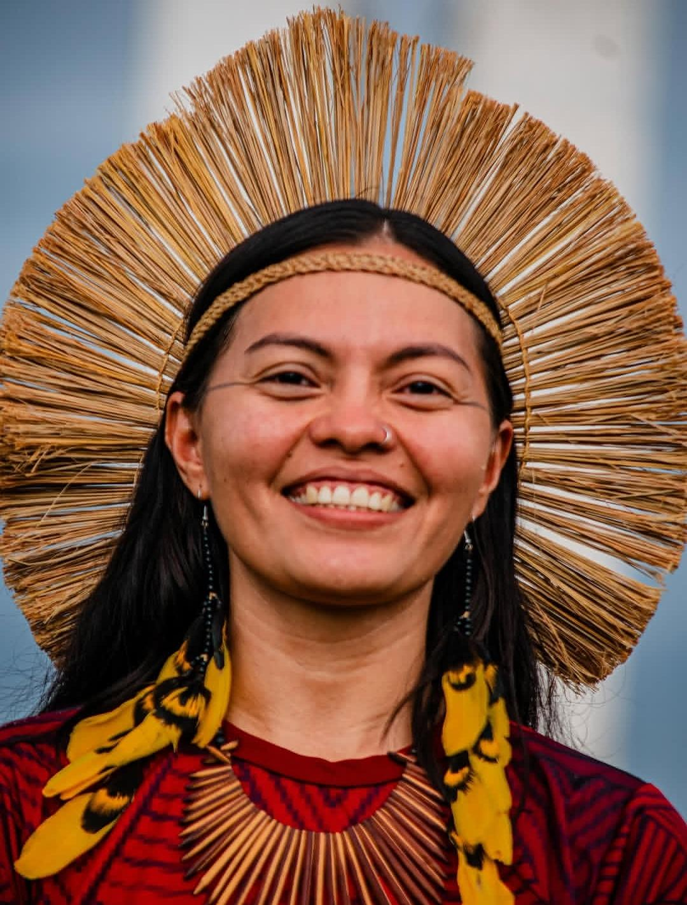
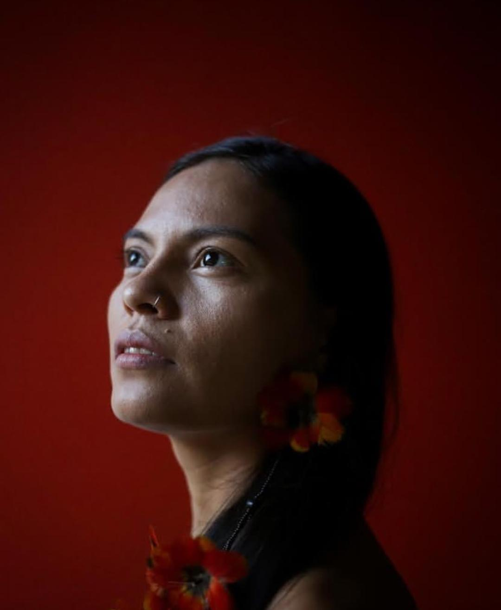
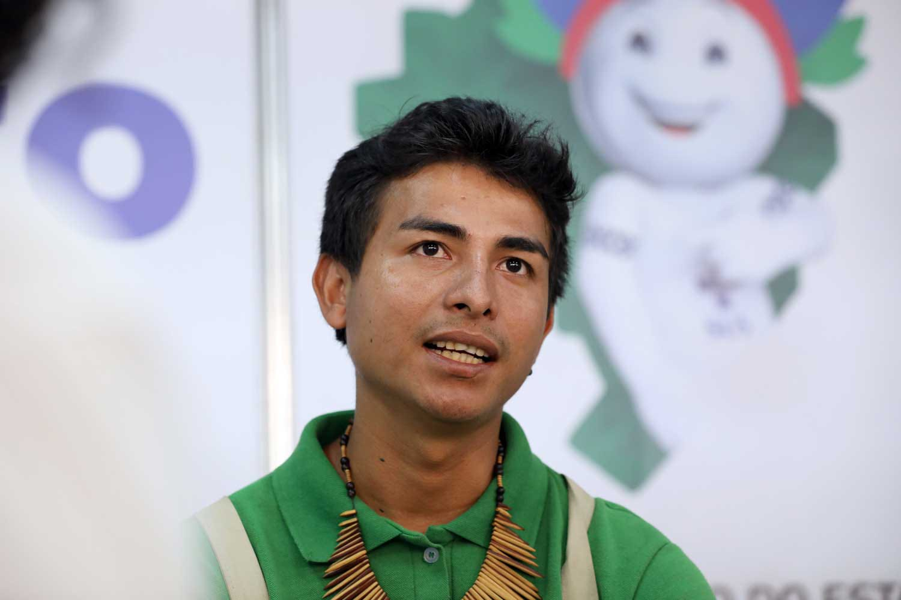
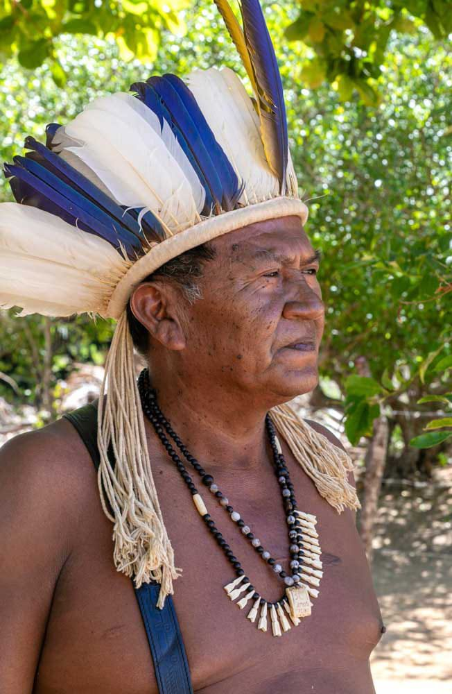
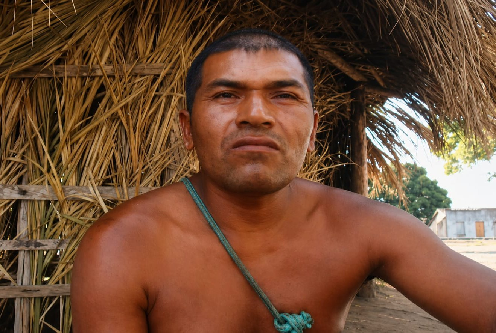

Mulheres de destaque



O papel das mulheres no povo Kiriri é central para a compreensão da organização social, cultural e política. Em contextos historicamente marcados por processos de colonização, apagamento cultural e disputas territoriais, a atuação feminina adquire ainda mais relevância, uma vez que contribui diretamente para a resistência, a continuidade e a reafirmação identitária do grupo. Nesse sentido, analisar suas funções e responsabilidades permite evidenciar não apenas a diversidade de suas atuações, mas também sua importância estrutural para a manutenção da vida coletiva.
As mulheres indígenas Kiriri desempenham múltiplas funções na organização de suas comunidades e são pilares fundamentais para a longevidade de seu povo. Elas não se restringem aos papéis domésticos; ao contrário, assumem protagonismo em diversas áreas, tanto em práticas tradicionais quanto em estratégias de luta e afirmação étnica.
No âmbito cultural, são reconhecidas como guardiãs e transmissoras dos saberes ancestrais. Cabe a elas a preservação e difusão de conhecimentos que incluem cantos, narrativas orais, rituais, práticas espirituais e o manejo de plantas medicinais. Esse processo de transmissão é essencial para a manutenção da identidade e da memória coletiva, especialmente diante de pressões externas e históricas de aculturação.
No campo político, as mulheres participam ativamente das decisões comunitárias, ocupando espaços em associações, conselhos e movimentos sociais. A presença delas fortalece a resistência frente a ameaças como projetos de lei que impactam negativamente os direitos territoriais e ambientais. Dessa forma, além de contribuírem para a coesão interna, elas movimentam redes de mobilização amplas, estabelecendo diálogos com outras etnias e com a sociedade civil.
Além disso, exercem papel fundamental na gestão ambiental e na produção agrícola. Estão diretamente envolvidas no cultivo das roças, no manejo dos recursos naturais e na garantia da soberania alimentar, evidenciando a relação entre práticas produtivas e sustentabilidade no território.
No que tange à economia e cultura, o artesanato destaca-se como uma atividade de grande relevância. Mais do que fonte de renda, é uma forma de expressão que envolve símbolos, técnicas e saberes tradicionais. Ao produzir peças carregadas de significados identitários, as mulheres valorizam a cultura Kiriri e fortalecem a autonomia econômica de suas famílias. Por fim, no plano social, desempenham funções essenciais no cuidado comunitário e familiar. Atuando como educadoras, cuidadoras e mediadoras de relações, sustentam a base afetiva e organizacional da aldeia, garantindo o bem-estar coletivo e a coesão do grupo.


As mulheres da comunidade indígena Kiriri têm um papel muito importante dentro e fora da aldeia, mas nem sempre recebem a visibilidade que merecem. Dar voz a essas mulheres é essencial, porque são elas que carregam saberes ancestrais, tradições culturais e a força da resistência do seu povo. Quando suas histórias são ouvidas, a gente passa a entender melhor a riqueza da cultura indígena e a importância de preservá-la.


